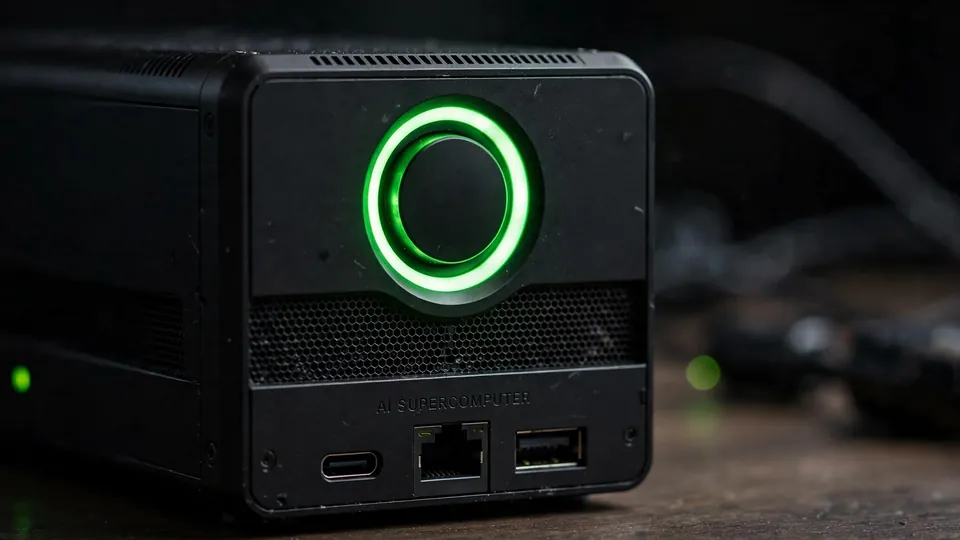
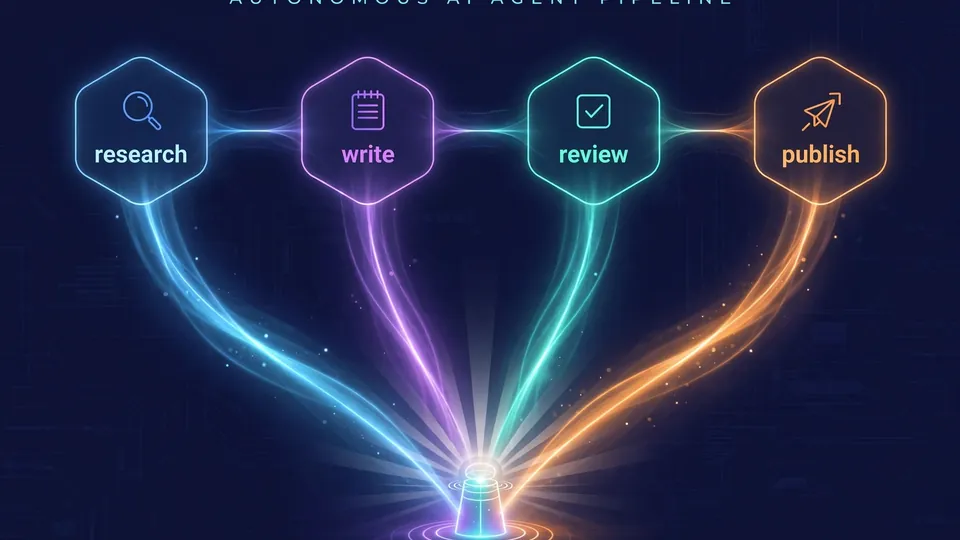

Vannor puts its own AI agents on marketing duty — and claims a 30-fold jump in first-page rankings
Vannor, a Greenville, South Carolina AI company, has launched what it calls an ‘agentic marketing’ model: autonomous AI agents that manage a brand’s marketing workflow from research and content planning through publication and ongoing optimization. The launch, announced via GlobeNewswire on October 10, 2026, arrives with unusually specific claims: the company says running the agents on its own site drove weekly Google search impressions from 318 to 1,762 in one week and a 30-fold increase in first-page rankings over a month — all on NVIDIA DGX Spark hardware it owns outright.
OpenAI has listed an unannounced gpt-rosalind-discovery model on its API pricing page under ‘Life sciences models,’ at the same $5/$25 rate as gpt-rosalind-research — the clearest sign yet that the Rosalind biology line is becoming a family of models. The listing was spotted by the AI Tracker Bot on X and reported by TestingCatalog on October 10, 2026.
OpenAI has listed an unannounced gpt-rosalind-discovery model on its API pricing page under ‘Life sciences models,’ at the same $5/$25 rate as gpt-rosalind-research — the clearest sign yet that the Rosalind biology line is becoming a family of models. The listing was spotted by the AI Tracker Bot on X and reported by TestingCatalog on October 10, 2026.
Vannor is selling a simple idea: what if your marketing team was made of software that needs no brief. The company, based in Greenville, South Carolina, said on October 10, 2026 that its new agentic marketing model puts autonomous AI agents in charge of a brand's marketing workflow — from researching live search results and analyzing Google Search Console data, to identifying opportunities, deciding what content to produce, and continuously adjusting based on performance. Unlike prompt-driven AI marketing tools, Vannor's agents are designed to decide what needs to be done and carry the work out themselves.
“The agents can research the opportunity, decide what should happen next, complete the work, and learn from the results. The business still sets the rules, but it no longer has to manually move every task through the process,” said Kruz McCollum, Vannor's CEO.
The evidence: Vannor's own numbers
The company is marketing with its own receipts. According to the announcement, deploying the agents on Vannor's own site pushed weekly Google search impressions from 318 to 1,762 within one week — about 5.5 times the previous visibility. Over a one-month window, the company recorded a 30-fold increase in the number of Google searches for which it ranked on the first page, with top-three rankings up 51-fold, based on Google Search Console data comparing August 24–30 with September 23–29, 2026.

Private silicon, no outside AI providers
Vannor's pitch has a second pillar: the agents run entirely on hardware the company owns. Its engines run on the NVIDIA GB10 Grace Blackwell board inside DGX Spark machines, with 128 GB of unified memory per node and ConnectX-7 networking, according to the release and the company's site at vannor.ai. Customer data is processed only on Vannor-owned hardware and is never sent to a third-party AI provider — a stance aimed at businesses wary of feeding sensitive brand and performance data into outside platforms. Overnight-scale jobs, the company says, face no shared queue.
Review panels and hard guardrails
Autonomy with publishing rights raises an obvious question: who stops the agent from hallucinating? Vannor says every piece passes an AI editor and a separate AI review panel before going live, with hard safeguards intended to block invented facts, prices and quotes. Approved content can be published directly to WordPress, Shopify and Wix, and the agents then monitor performance and rewrite or expand content based on what the data shows is working. Businesses can dial the autonomy up or down — requiring human approval on selected work or letting approved workflows run on their own.

Four engines, one brand voice
The system is organized around four marketing engines that share a single model of the brand: search content and ongoing optimization, paid advertising, landing and location pages, and social content. Vannor's site describes six control layers around every piece — approvals, a quality gate that scores work before it ships, brand governance, privacy, per-location models for multi-site portfolios, and a full audit log of everything that shipped, who approved it and why.
Following the launch, Vannor says it is moving toward a partner model aimed at multi-location brands, agencies managing marketing for client businesses, and companies that need to produce and optimize marketing across channels — with partner applications open now. Vannor LLC describes itself as an AI technology company focused on making ‘agentic marketing’ a distinct category.
Why it matters
Whether or not the headline numbers generalize, Vannor's launch captures where the agent economy is heading: from tools that wait for instructions to systems that decide and execute. The caveat, stated plainly, is that the 30-fold figure comes from the company's own deployment, reported by the company, with no independent audit. What is independently interesting is the infrastructure posture — a small company choosing to own its compute rather than rent someone else's model — and the guardrail design, which will determine whether agentic marketing is a category or a liability.